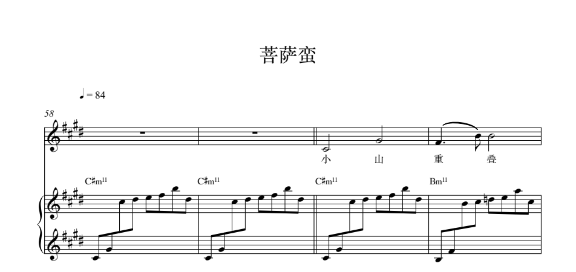

菩萨蛮
小山重叠金明灭
Pusa Man 菩萨蛮
Words by Wen Tingyun, a Tang-dynasty poet · Music by Liu Huan
Pay by card, Apple Pay or Google Pay. The PDF is emailed to you within 24 hours of payment.
菩薩蠻
詞：温庭筠（唐代の詩人） · 曲：劉歓
カード決済・Apple Pay・Google Pay がご利用いただけます。お支払いから24時間以内に、PDF をメールでお送りします。お支払い通貨は地域により自動で選ばれます。
演奏示范
乐谱预览
以下为局部谱面预览。完整 PDF 在付款及人工核对后通过邮箱交付。

演唱 · 刘欢
词 · 温庭筠【唐】
曲 · 刘欢
出自 · 电视剧《甄嬛传》插曲（2012）
说明 · 剧中原唱为姚贝娜；本谱依据刘欢演唱的版本
扒谱 · Sheen
来源 · 原版录音
微信或支付宝付款后，请提交订单信息。人工核对到账后，通过邮箱交付完整乐谱；订单提交成功不代表自动确认到账。
商品信息暂时无法加载，请刷新页面后重试。
Sung by Liu Huan
Words · Wen Tingyun (Tang dynasty)
Music · Liu Huan
From the TV drama Empresses in the Palace (2012), where it is sung by Yao Beina; this score follows Liu Huan’s own recording
Score · Sheen
Based on the original studio recording
歌 · 劉歓
詞 · 温庭筠（唐）
曲 · 劉歓
ドラマ『宮廷の諍い女』挿入歌（2012）。劇中では姚貝娜が歌唱。この楽譜は劉歓の歌唱版をもとにしています
楽譜制作 · Sheen
オリジナル録音をもとに制作